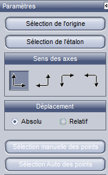

Terminale Générale
Spécialité Physique – Chimie
2020-2021
TP.4 Étude du mouvement : aspect énergétique
Utiliser des capteurs ou une vidéo pour déterminer les équations horaires du mouvement
du centre de masse d’un système dans un champ uniforme.
Étudier l’évolution des énergies cinétique, potentielle et mécanique.
- Mettre en œuvre un dispositif
d’acquisition etde traitement de données :microcontrôleur,interface d’acquisition, tableur,langage de programmation - Collecter des données sur un mouvement (vidéo, chronophotographie, etc.).
- Calculer l’énergie mécanique, l’énergie potentielle et l’énergie cinétique.
1. Équations horaires du mouvement
Matériel :
- PC
- Logiciel Latis Pro
- Fichier vidéo à étudier : TP1SChutVert.avi
✓ Lancer Latis Pro
✓ Cliquer : Lecture des séquences AVI

✓ Ouvrir la vidéo dans le dossier : Eurosmart/LatisPro/Videos/
✓ Si la vidéo se lance automatiquement, la remettre au début.
✓ Cliquer les différents boutons :

Mettre l'origine en bas sur le carton (voir éventuellement la dernière image).
Régler l'étalon sur 1m
Choisir le sens x vers la droite y vers le haut
Cliquer sélection manuelle des points et faire le pointage
✓ Cliquer sur courbes (en haut à droite) :
✓ Tracer les courbes : Cliquer déplacer et relâcher sur la zone.

✓ Cliquer droit sur le nom de la courbe et cliquer sur propriété pour renommer
la courbe en « X ».
✓ Faire la même chose pour la courbe Mouvement Y à renommer en « Y ».
✓ Cliquer « modélisation » et cliquer déplacer la courbe X et
relâcher dans le cadre « courbe à modéliser ».

✓ Choisir le modèle qui convient, puis cliquer « calculer le modèle ».
Cliquer le bouton ≫ pour avoir les valeurs.

✓ Noter les valeurs et faire la même chose pour Y.
✓ Sauvegarder pour la suite.
$x(t)=$.......................................
$y(t)=$.......................................
\[ \Sigma\vec{F}=m.\vec{a}\]
Intensité de la pesanteur : $g=9,8\ m.s^{-2}$
Masse de la balle : $m=0,100\ kg$
2. Énergie
Rappel : L’énergie cinétique $E_C=\dfrac{1}{2} mv²$.
✓ Cliquer sur « Traitement » puis feuille de calcul.
✓ Remplir la feuille de calcul :
vX=deriv(Modèle de X)
vY=deriv(modèle de Y)
v=sqr(vX^2+vY^2)

Rappel : L’énergie potentiel $E_P=mgh$
Rappel : L’énergie mécanique $E_m=E_C+E_P$
Travail supplémentaire
La valeur trouvée par les différents groupes est différente de la valeur couramment admise $g=9,81 m.s^{-2}$.
L’élève de spécialité de physique chimie, doit pouvoir écrire le résultat des mesures sous la forme :
\[g=\overline{g}\ \pm u(g) \] $\overline{g}$ est la moyenne des $n$ mesures de chaque groupe :
\[ \overline{g}= \frac{1}{n}\displaystyle\sum_{i=1}^{n} g_i \] $u(g)$ est l’incertitude-type. Lorsqu’on dispose de plusieurs mesures (comme c’est le cas ici) on peut faire une évaluation statistique de $u(g)$ appelé évaluation de type A :
\[u(g)=\frac{σ_{n-1}}{\sqrt{n}} \] $σ_{n-1}$ noté aussi $S$ ou $S_x$ est l’écart-type expérimentale appelé aussi écart-type d’un échantillon (en anglais sample standard deviation) :
\[ \sigma_{n-1}=S=\sqrt{\dfrac{\displaystyle\sum_{i=1}^{n}(g_i - \overline{g}²) }{n-1}} \] Avec les calculs précédant, lorsqu’on écrit le résultat :
\[g=\overline{g}\ \pm u(g) \] le niveau de confiance est de 68%. C’est-à-dire que la marge donnée par $u(g)$ a la probabilité d’être juste 68 cas sur 100.
$g=………±……….$ à 68%.
L'écriture du résultat d'une mesure doit faire apparaître l'incertitude :
On effectue $n$ mesures d’une grandeur $x$ : $ \left\{ x_1, x_2, ..., x_n \right\} $
Calcul de la moyenne : \[ \overline{x}= \frac{x_1 + x_2 +...+x_n}{n}= \displaystyle\sum_{i=1}^{n} \frac{x_i}{n} \] On a alors \[ u(x)=\frac{\sigma_{n-1}}{\sqrt{n}} \] avec $\sigma_{n-1}$ l'écart-type expérimentale ou écart-type de l'échantillon (noté aussi $S_{exp}$ ou $S_x$)
Pour en savoir plus voir : Sample standard deviation \[ \sigma_{n-1} = \sqrt{\frac{1}{n-1}\displaystyle\sum_{i=1}^{n} (m_i-\overline{m})² }\] Avec les calculs précédants et en écrivant $x= \overline{x} \pm u(x) $ le niveau de confiance est de 68%. C'est à dire que l'intervalle donnée a 68% de chance d'être juste.